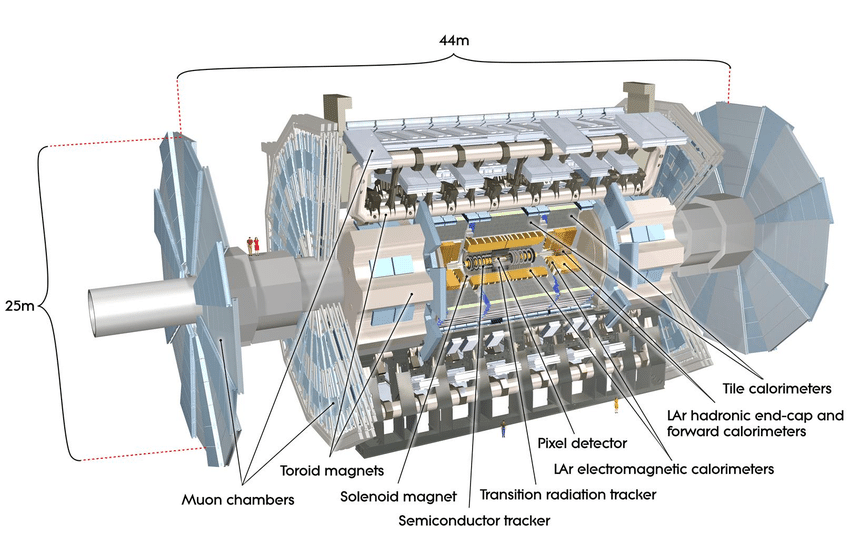
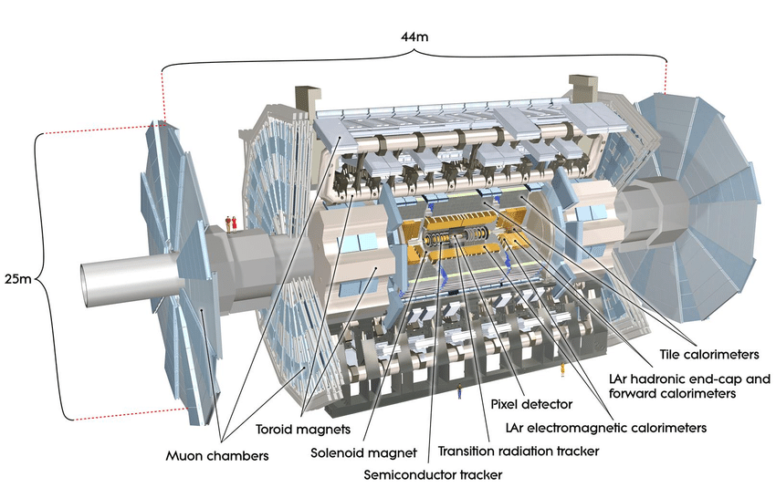
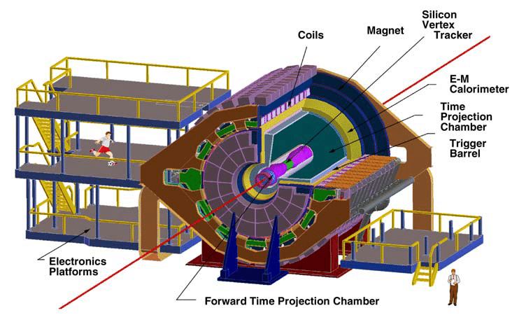
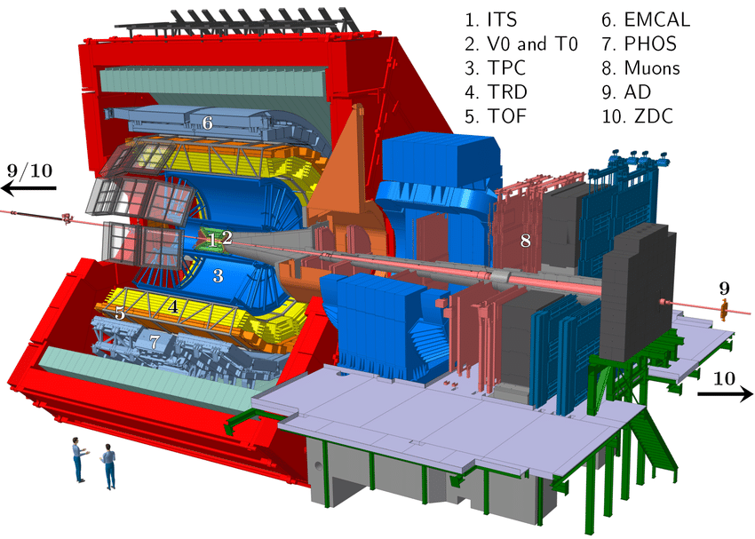
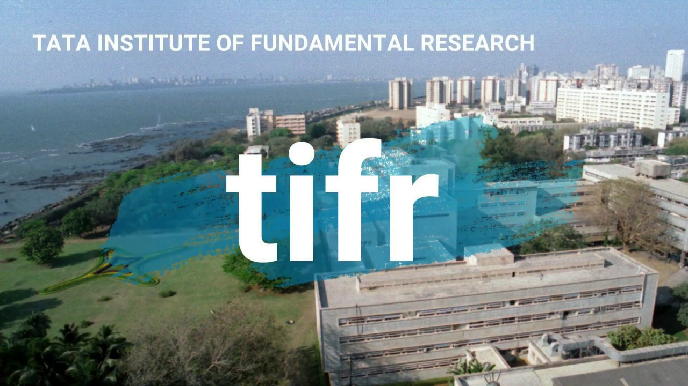

Experience
Nuclear Chemistry Group (SBU) - Researh Assistant
Research Assistant , August 2015 - Present
- Ph.D in Department of Chemistry
- Research Assistant in "Nuclear Chemistry Group" headed by Prof. Jiangyong Jia and Prof. Roy Lacey. Area of research is high energy nuclear physics in heavy ion collider experiments.
- Research Assistant in ATLAS experiment at CERN (Geneva) and STAR experiment at BNL (New York)
- Research - data analysis of heavy ion collisions in ATLAS and STAR experiments and Monte Carlo simulations
- Teaching Assistant for two courses
- Relevant courses taken - Statistical Mechanics, Quantum Mechanics, Scientific Computing
- Tentative graduation - May 2021
 

ATLAS Experiment at CERN
Research Assistant, 2016 - Present
- Data Gathering: Developed supervised learning models using existing data to filter useful events in heavy ion collisions. These models reduced sampling bias and were integrated in current data gathering system.
- Data Cleaning: Performed exploratory data analysis and data visualizations for removing anomalies, outliers and non-physical data points to produce clean and reliable distributions to be fed to models.
- Model Tuning: Performed hyper-parameter tuning using grid search for the particle reconstruction model with neural networks. The finalized hyper-parameters had been implemented in the current deep learning models, and greatly improved our data accuracy.
- Significance Tests: Implemented A/B or multi-variable tests, Chi-square tests and power analyses by using the existing data.

STAR Experiment at BNL
Research Assistant, 2015 - Present
- Integrated BS and MS in Physics
ALICE Experiment at CERN
Summer Internship, June-August, 2013

- Worked in ALICE to characterize a new hybrid chip to be used in the next detector upgrade of experiment.
- The chip used state-of-the-art technology of Monolithic Active Pixel Sensor (MAPS) which embed sensing diode and front-end electronics on the same silicon chip, thus making it compact and cost-effective.
- Exposed the chips with X-ray photons from Fe-55 source. Analysed the raw experimental data to measure the Seed Signal, Cluster Signal, Cluster Multiplicity and Matrix Signal. Computed and reported the Charge Collection Efficiency (CCE) and its noise for different sectors of the chip.
- Estimated the radiation damage on the chips by irradiating them with neutrons and measuring the Charge Collection efficiency.
- Project report - "Characterisation of MIMOSA-32-ter chip in ALICE ITS Upgrade", CERN-STUDENTS-Note-2013-026
Tata Institue of Fundamental Research - Mumbai
Summer Internship, May-July, 2014

- Investigated the search for a very rare decay of the D0 meson into two photons, in the e++e- collisions at Belle experiment in Tsukuba, Japan. Evaluated the sensitivity for this decay using Monte Carlo simulated data samples for the Belle experiment.
- Simulated toy experiments to calculate the signal yield distribution with statistical uncertainty. Defined two models - a one dimensional model taking total mass as the variable and a two dimensional model taking total mass and mass difference of the photons as variables.
- Calculated signal sensitivity of the two models by performing a hypothesis testing using the "CLs" significance method and compared the results. Observed that the two dimensional model gave a higher signal sensitivity than the one dimensional model. So, the two dimensional model gives the optimum signal sensitivity and will be used for analysing experimental data from Belle to search for the decay.
- Project report - "Sensititvity measurement of D0→ γ γ rare decay process in Belle"